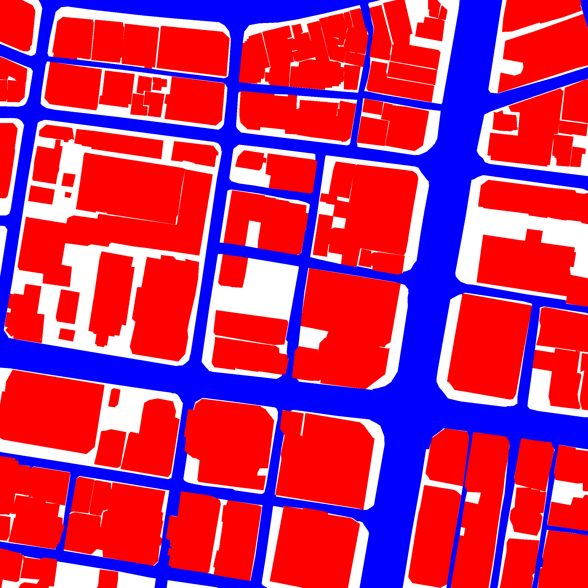
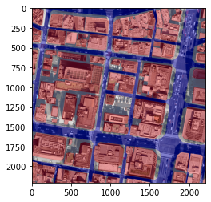
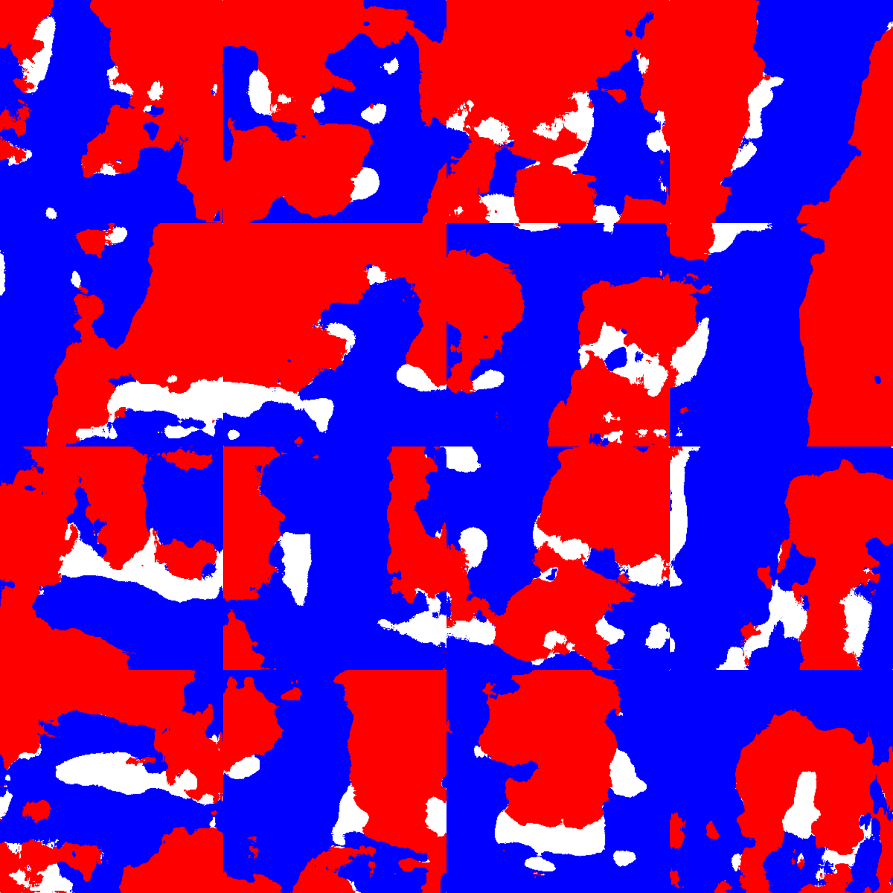

Aerial Image Segmentation
In this post, I will be illustrating my attempt on how deep learning methods can be used to perform aerial image segmentation using CITY-OSM dataset.
The sequence of tasks are arranged in following manner
- Download dataset
- Exploration of Dataset
- Process Image
- Prepare Dataset
- Build a segmentation model
- Evaluate the model
- Prediction
Aerial imagery dataset is collected from Google Maps and labels are obtained from Open Street Maps (OSM). The labels include road, building and background.
| Satellite Image | Label | Overlay |
|---|---|---|
 |  |  |
The available cities in CITY-OSM dataset are Berlin, Chicago, Paris, Potsdam, Tokyo and Zurich. I have automated the process to download the dataset and extract labels from the user defined cities. While processing the dataset, I split every single image into 4x4 grid and reisze into 300x300 pixels. For each image, the labels are categorized as 0: building red, 1 road blue, 2 BG white. The additional noisy pixels are assigned to 2 BG white. Finally, based on the processed images the train and test set are prepared.
I decided to go with U-Net for 2 reasons
- The UNet combines the location information from the downsampling path to finally obtain a general information combining localisation and context, which is necessary to predict a good segmentation map.
- Since it has shown success in many segmentation tasks, it could potentially serve as a benchmark for my next approach (need to do literature review).
U-Net
Arxiv Link: Convolutional Networks for Biomedical Image Segmentation
- UNet is a fully convolutional network(FCN) that does image segmentation. Its goal is to predict each pixel's class.
- UNet is built upon the FCN and modified in a way that it yields better segmentation in medical imaging.
UNet Architecture has 3 parts:
- The Contracting/Downsampling Path
- Bottleneck
- The Expanding/Upsampling Path
Downsampling Path:
- It consists of two 3x3 convolutions (unpadded convolutions), each followed by a rectified linear unit (ReLU) and a 2x2 max pooling operation with stride 2 for downsampling.
- At each downsampling step we double the number of feature channels.
Upsampling Path:
- Every step in the expansive path consists of an upsampling of the feature map followed by a 2x2 convolution (“up-convolution”), a concatenation with the correspondingly feature map from the downsampling path, and two 3x3 convolutions, each followed by a ReLU.
Skip Connection: The skip connection from the downsampling path are concatenated with feature map during upsampling path. These skip connection provide local information to global information while upsampling.
Final Layer: At the final layer a 1x1 convolution is used to map each feature vector to the desired number of classes.
I used a variant of U-Net (quarter the features maps than the original) to build the segmentation model.
From the berlin dataset, it was clearly visible that the classes (Building, Road and BG) are not balanced. To overcome it, I applied weight factor ['BG': 1, 'Road': 2, 'BG': 0.5]. These weights can be used to give more importance to the imbalanced classes.
I compute the Intersection over Union (IoU) for building, road and background to quantify the percent overlap between the target mask and our prediction output.
Results
Dataset used: Berlin
No. of Test set images: 640
Building IoU on test set =0.6401
Road IoU on test set = 0.4409
BG IoU on test set = 0.6520
mIoU on test set = 0.5776
Frequency weighted IoU on test set = 0.6413
Pixel accuracy on test set = 0.7691
| Satellite Image | Label | Predicted |
|---|---|---|
|  |
Although the pixel-wise accuracy looks reasonable, IoU for each class can be increased further.
Next steps:
Increase the number of iterations/epochs. The above result is just based on 10 epochs (due to limited compute resource).
Adding image augmentation like zooming and changing angles, rotation etc to provide wide situations for training. This could help in creating the model that is more smart to recognize the buildings, roads and BG in different situations. And it also increases the number of images in data which directly proportional to the good prediction of result.
Replace the variant of U-Net with original U-Net architecture.
Build U-Net with backbone architecures (VGG, ResNet, DenseNET, EfficientNet, etc.) as a encoder part. In this way, pretrained weights can be used to fine-tune the model.
The complete code and procedure to reproduce can be found in my GitHub repo.